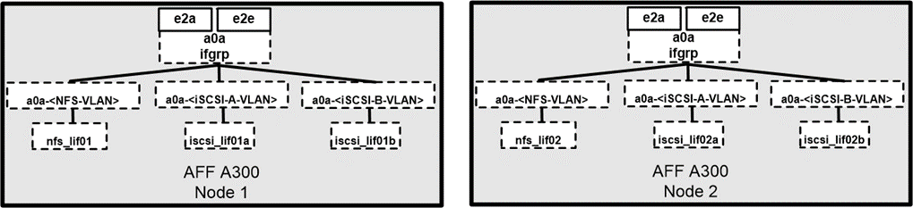

请求文档变更
请求文档变更 在 GitHub 上编辑
在 GitHub 上编辑 提供者指南
提供者指南最佳实践
存储最佳实践
高可用性
NetApp 存储集群设计可在每个级别提供高可用性：
-
集群节点
-
后端存储连接
-
RAID TEC ，可承受三个磁盘故障
-
可承受两个磁盘故障的 RAID DP
-
从每个节点物理连接到两个物理网络
-
存储 LUN 和卷的多个数据路径
安全多租户
NetApp Storage Virtual Machine （ SVM ）提供了一个虚拟存储阵列构造，用于分隔安全域，策略和虚拟网络。NetApp 建议您为存储集群上托管数据的每个租户组织创建单独的 SVM 。
NetApp 存储最佳实践
请考虑以下 NetApp 存储最佳实践：
-
始终启用 NetApp AutoSupport 技术，该技术会通过 HTTPS 向 NetApp 发送支持摘要信息。
-
为了最大程度地提高可用性和移动性，请确保为 NetApp ONTAP 集群中每个节点上的每个 SVM 创建一个 LIF 。非对称逻辑单元访问（ Asymmetric Logical Unit Access ， ALUA ）用于解析路径并识别活动优化（ Direct ）路径与活动非优化路径。ALUA 既适用于 FC ，也适用于 FCoE 和 iSCSI 。
-
仅包含 LUN 的卷不需要在内部挂载，也不需要接合路径。
-
如果您在 ESXi 中使用质询握手身份验证协议（ Challenge-Handshake Authentication Protocol ， CHAP ）进行目标身份验证，则还必须在 ONTAP 中对其进行配置。使用命令行界面（
vserver iscsi security create）或 NetApp ONTAP 系统管理器（在 "Storage">"SVM">"SVM Settings">"Protocols">"iSCSI" 下编辑启动程序安全性）。
SAN 启动
NetApp 建议您在 FlexPod Datacenter 解决方案中为 Cisco UCS 服务器实施 SAN 启动。通过此步骤，可以通过 NetApp AFF 存储系统安全地保护操作系统，从而提高性能。本解决方案概述的设计使用 iSCSI SAN 启动。
在 iSCSI SAN 启动中，为每个 Cisco UCS 服务器分配两个 iSCSI vNIC （每个 SAN 网络结构一个），以便在通往存储的整个过程中提供冗余连接。此示例中连接到 Cisco Nexus 交换机的存储端口 E2A 和 e2e 将分组在一起，形成一个名为接口组（ ifgrp ）的逻辑端口（在此示例中为 a0a ）。iSCSI VLAN 在 igroup 上创建， iSCSI LIF 在 iSCSI 端口组（在此示例中为 a0a-<iscsi-a-VLAN> ）上创建。iSCSI 启动 LUN 通过 iSCSI LIF 使用 igroup 公开给服务器。此方法仅允许授权服务器访问启动 LUN 。有关端口和 LIF 布局，请参见下图。

与 NAS 网络接口不同， SAN 网络接口未配置为在发生故障期间进行故障转移。相反，如果网络接口不可用，则主机将选择一个新的优化路径来访问可用的网络接口。ALUA 是 NetApp 支持的一种标准，可提供有关 SCSI 目标的信息，从而使主机能够确定最佳存储路径。
存储效率和精简配置
NetApp 在存储效率创新方面一直处于行业领先地位，例如首次针对主工作负载执行重复数据删除，以及通过实时数据缩减增强数据压缩并高效存储小文件和 I/O 。ONTAP 支持实时和后台重复数据删除，以及实时和后台数据压缩。
要在块环境中实现重复数据删除的优势，必须对 LUN 进行精简配置。尽管 VM 管理员仍认为 LUN 占用了已配置的容量，但重复数据删除节省的空间会返回到卷中以用于其他需求。NetApp 建议您将这些 LUN 部署在 FlexVol 卷中，这些卷也采用精简配置，其容量是 LUN 大小的两倍。这样部署 LUN 时， FlexVol 卷仅充当配额。LUN 占用的存储会在 FlexVol 卷及其所属聚合中进行报告。
要最大程度地节省重复数据删除的空间，请考虑计划后台重复数据删除。但是，这些进程在运行时会使用系统资源。因此，理想情况下，您应将其计划在活动较少的时间（例如周末），或者更频繁地运行，以减少要处理的更改数据量。AFF 系统上的自动后台重复数据删除对前台活动的影响要小得多。后台数据压缩（对于基于硬盘的系统）也会占用资源，因此您应仅考虑性能要求有限的二级工作负载。
Quality of service
运行 ONTAP 软件的系统可以使用 ONTAP 存储服务质量功能来限制吞吐量（以每秒兆位数（ MBps ）为单位），并限制文件， LUN ，卷或整个 SVM 等不同存储对象的 IOPS 。自适应 QoS 用于设置 IOPS 下限（ QoS 最小值）和上限（ QoS 最大值），此上限可根据数据存储库容量和已用空间动态调整。
吞吐量限制可用于在部署之前控制未知工作负载或测试工作负载，以确认它们不会影响其他工作负载。在确定抢占资源的工作负载后，您也可以使用这些限制来对其进行限制。此外，还支持基于 IOPS 的最低服务级别，以便为 ONTAP 中的 SAN 对象提供稳定一致的性能。
对于 NFS 数据存储库，可以将 QoS 策略应用于整个 FlexVol 卷或其中的各个虚拟机磁盘（ Virtual Machine Disk ， VMDK ）文件。对于使用 ONTAP LUN 的 VMFS 数据存储库（ Hyper-V 中的集群共享卷 [CSV] ），您可以将 QoS 策略应用于包含 LUN 的 FlexVol 卷或各个 LUN 。但是，由于 ONTAP 无法识别 VMFS ，因此无法将 QoS 策略应用于单个 VMDK 文件。在 VSC 7.1 或更高版本中使用 VMware 虚拟卷（ VVOL ）时，您可以使用存储功能配置文件在各个 VM 上设置最大 QoS 。
要为 LUN （包括 VMFS 或 CSV ）分配 QoS 策略，您可以从 ONTAP 主页上的存储系统菜单中获取 SVM （显示为 vserver ）， LUN 路径和序列号。选择存储系统（ SVM ），然后选择相关对象 > SAN 。在使用 ONTAP 工具之一指定 QoS 时，请使用此方法。
您可以为对象设置 QoS 最大吞吐量限制，以 MBps 和 IOPS 为单位。如果同时使用这两者，则 ONTAP 会强制实施达到的第一个限制。一个工作负载可以包含多个对象，一个 QoS 策略可以应用于一个或多个工作负载。将策略应用于多个工作负载时，这些工作负载将共享策略的总限制。不支持嵌套对象（例如，对于卷中的某个文件，不能每个对象都有自己的策略）。QoS 最小值只能以 IOPS 为单位进行设置。
存储布局
本节介绍有关存储上 LUN ，卷和聚合布局的最佳实践。
存储 LUN
为了获得最佳性能，管理和备份， NetApp 建议采用以下 LUN 设计最佳实践：
-
创建单独的 LUN 以存储数据库数据和日志文件。
-
为每个实例创建一个单独的 LUN 以存储 Oracle 数据库日志备份。LUN 可以属于同一个卷。
-
为数据库文件和日志文件配置 LUN 并进行精简配置（禁用空间预留选项）。
-
所有映像数据都托管在 FC LUN 中。在分布在不同存储控制器节点所拥有的聚合中的 FlexVol 卷中创建这些 LUN 。
要在存储卷中放置 LUN ，请遵循下一节中的准则。
存储卷
为了获得最佳性能，管理和备份操作， NetApp 建议采用以下卷设计最佳实践：
-
在不同的卷中隔离具有 I/O 密集型查询的数据库，并最终拥有单独的作业来备份这些数据库。
-
为了加快恢复速度，请将恢复时间目标（ RTO ）最短的大型数据库和数据库放置在单独的卷中。
-
将不太重要或 I/O 要求较低的中小型数据库整合到一个卷中。备份同一卷中的大量数据库时，需要维护的 Snapshot 副本更少。NetApp 还建议整合 Oracle 数据库服务器实例，以便使用相同的卷来控制创建的备份 Snapshot 副本的数量。
-
对于数据库副本，请将副本的数据和日志文件置于所有节点上相同的文件夹结构中。
-
将数据库文件放在一个 FlexVol 中；不要将其分布在各个 FlexVol 中。
-
根据需要配置卷自动调整大小策略，以帮助防止出现空间不足的情况。
-
如果数据库 I/O 配置文件主要包含大型顺序读取，例如决策支持系统工作负载，则可以在卷上启用读取重新分配。读取重新分配可优化块以提高性能。
-
为了便于从操作角度进行监控，请将卷中的 Snapshot 副本预留值设置为零。
-
禁用存储 Snapshot 副本计划和保留策略。而是使用适用于 Oracle 数据库的 NetApp SnapCenter 插件来协调 Oracle 数据卷的 Snapshot 副本。
-
将用户数据文件和日志文件放在单独的 FlexVol 上，以便为相应的 FlexVol 配置适当的 QoS ，并创建不同的备份计划。
聚合
聚合是 NetApp 存储配置的主存储容器，包含一个或多个 RAID 组，这些 RAID 组同时包含数据磁盘和奇偶校验磁盘。
NetApp 使用共享聚合和专用聚合执行各种 I/O 工作负载特征测试，这些聚合的数据文件和事务日志文件是分开的。测试显示，一个包含更多 RAID 组和驱动器（ HDD 或 SSD ）的大型聚合可优化和提高存储性能，并且更便于管理员管理，原因有两个：
-
一个大型聚合可使所有驱动器的 I/O 功能对所有文件可用。
-
一个大型聚合可以最高效地利用磁盘空间。
为了实现有效的灾难恢复， NetApp 建议您将异步副本放置在灾难恢复站点中独立存储集群的聚合上，并使用 SnapMirror 技术复制内容。
为了获得最佳存储性能， NetApp 建议聚合中至少有 10% 的可用空间。
AFF A300 系统（具有两个磁盘架和 24 个驱动器）的存储聚合布局指南包括：
-
保留两个备用驱动器。
-
使用高级磁盘分区功能在每个驱动器上创建三个分区：根分区和数据分区。
-
每个聚合总共使用 20 个数据分区和两个奇偶校验分区。
备份最佳实践
NetApp SnapCenter 用于 VM 和数据库备份。NetApp 建议采用以下备份最佳实践：
-
部署 SnapCenter 以创建用于备份的 Snapshot 副本时，请关闭托管 VM 和应用程序数据的 FlexVol 的 Snapshot 计划。
-
为主机启动 LUN 创建专用 FlexVol 。
-
对具有相同用途的 VM 使用类似或单个备份策略。
-
每个工作负载类型使用类似的或单个备份策略；例如，对所有数据库工作负载使用类似的策略。对数据库， Web 服务器，最终用户虚拟桌面等使用不同的策略。
-
在 SnapCenter 中启用备份验证。
-
配置将备份 Snapshot 副本归档到 NetApp SnapVault 备份解决方案。
-
根据归档计划在主存储上配置备份保留。
基础架构最佳实践
网络最佳实践
NetApp 建议采用以下网络最佳实践：
-
确保您的系统包含用于生产和存储流量的冗余物理 NIC 。
-
为计算和存储之间的 iSCSI ， NFS 和 SMB/CIFS 流量分隔 VLAN 。
-
确保您的系统包含一个专用 VLAN ，用于客户端访问医疗映像系统。
您可以在 FlexPod 基础架构设计和部署指南中找到其他网络最佳实践。
计算最佳实践
NetApp 建议采用以下计算最佳实践：
-
确保每个指定的 vCPU 都由一个物理核心支持。
虚拟化最佳实践
NetApp 建议采用以下虚拟化最佳实践：
-
使用 VMware vSphere 6 或更高版本。
-
将 ESXi 主机服务器 BIOS 和操作系统层设置为 Custom Controlled – High Performance 。
-
在非高峰时段创建备份。
医学影像系统最佳实践
请参见典型医疗成像系统的以下最佳实践和一些要求：
-
请勿过量使用虚拟内存。
-
确保 vCPU 总数等于物理 CPU 数量。
-
如果环境较大，则需要专用 VLAN 。
-
使用专用 HA 集群配置数据库 VM 。
-
确保 VM OS VMDK 托管在快速第 1 层存储中。
-
与医疗映像系统供应商合作，确定准备 VM 模板以快速部署和维护的最佳方法。
-
管理，存储和生产网络需要对数据库进行 LAN 隔离，并为 VMware vMotion 提供隔离的 VLAN 。
-
使用名为的基于存储阵列的 NetApp 复制技术 "SnapMirror" 而不是基于 vSphere 的复制。
-
使用利用 VMware API 的备份技术；备份时间应在正常生产时间之外。